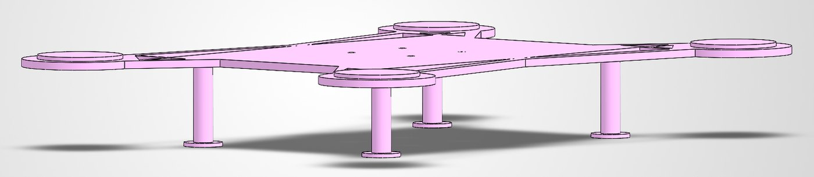
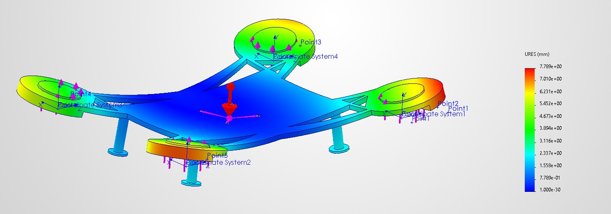
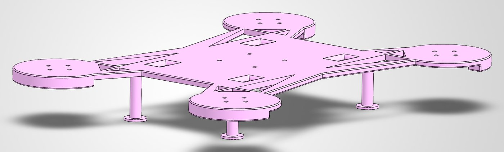
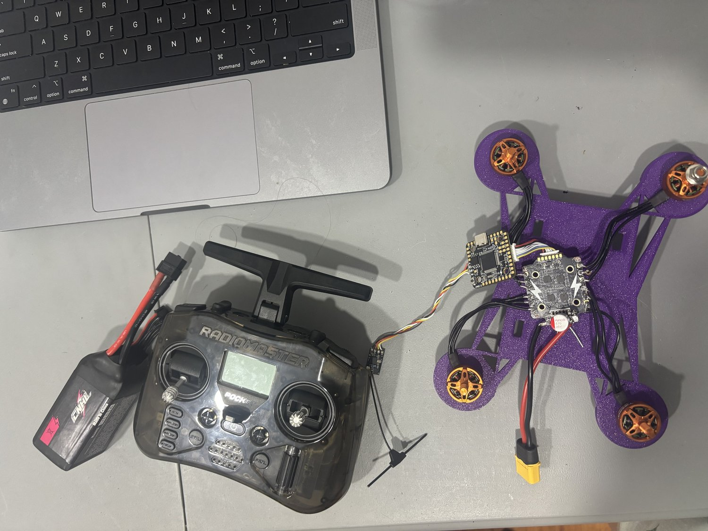

Project
An iterative quadcopter frame I designed in SolidWorks and refined with finite-element analysis. Working within the material I had available, I used simulation to find the frame's structural weak points, then redesigned it to be stiffer and better balanced before printing.
01 · PROTOTYPE

The first prototype was built from the material I had available and kept deliberately simple. The tolerancing was off and several features weren't made to spec, and the frame carried more bulk material than it needed. Under load it flexed in a few different areas — which, more usefully, pointed to where the major stress concentrations actually were.
02 · ANALYSIS

Rather than guess at the problem areas, I ran a rudimentary finite-element study — a static displacement analysis using inertial relief — on the frame, with the material properties I was working with. The simulation made the weak points obvious: deflection peaked at the motor arms and outer mounts (shown in red and orange) while the central body stayed stiff (blue). That gave me specific, ranked targets for the redesign instead of reinforcing everything blindly.
03 · REDESIGN

For the second iteration I addressed each point the analysis flagged. I reinforced the stress concentrations the study identified, redistributed material to bring down the peak stresses, and added extra material in the sections that had been bending to stiffen them. The result is the print-ready frame — stronger where it needs to be, without the dead weight of the first version.
04 · BUILT

This is the design realized: the optimized frame printed and built up into a complete, flying quad, piloted manually over a radio link with a handheld transmitter (not autonomous). I assembled the full stack onto it — the brushless motors, the flight-controller and ESC, the receiver, and the power — all mounted on the frame the analysis shaped. Seeing it hold up in the air is the payoff of the stress study and redesign: the reinforced frame takes the vibration and landing loads that bent the first version.